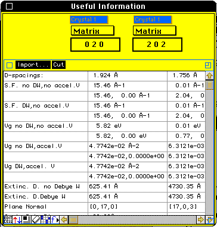

Distributed By: Virtual Labs
Useful Information Window
PATH...File Menu:New:Tables:Useful Info...

Useful Information Dialog Box
This window will calculate specific values for two planes. The planes can
be from any of the four primary crystals and the desired crystal is selected
using the two pop-up menus located above the editable text fields. (This
is similar to the Angle Between
Direction Dialog Box.)
The planes are set by typing in the appropriate (hkl) values for the planes
of interest. Pressing the <enter> or <tab> key will cause Desktop
Microscopist to calculate the desired values and select the other input
box. If the crystals are dissimilar for the two planes then Desktop Microscopist
will return the Matrix zone axis which contains the two planes. Extinction
Distances are calculated based on the active beam parameters. In this manner,
it is possible to calculate extinction distances for any desired electron
accelerating voltage or x-ray wavelength. The two ruler buttons serve to
display current crystal values and can be used to access the relevant Crystal
Definition Dialog Box.
Author: J.ames T.
Stanley
 Desktop
Manual:Dialog Boxes
Desktop
Manual:Dialog Boxes
Distributed By: Virtual Labs
Last Updated:1/12/96 Sat, Apr 27, 1996